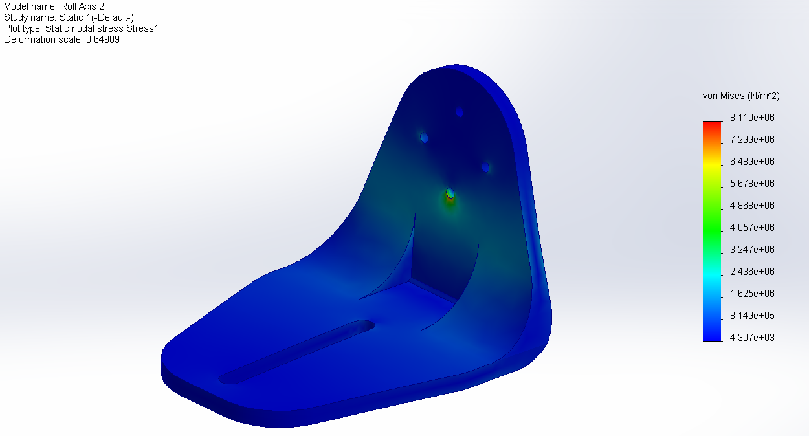

Lead screw & constrained gantry
The team selected a lead-screw mechanism over telescoping and cascade concepts for rigidity and position holding. The constrained gantry supports the elevated camera assembly.
A height-adjustable, two-axis camera payload for a teleoperated Unitree Go2 Pro, developed to collect imagery for 3D reconstruction.

I contributed to requirements and specifications, concept generation and selection, engineering analysis, and final design. My documented CAD and drawing work focused on the two-axis gimbal.
The complete payload was an interdisciplinary team deliverable. The final report credits Matthew Ackerman with height-adjustment CAD, drawings, analysis, and the BOM, and Jeffrey Bulen with testing and integration.

The sponsor needed a camera payload that could collect indoor imagery at different heights while moving with a quadruped robot. The design had to combine a height-changing mechanism, camera stabilization, and a removable robot interface.
Key constraints included structural stiffness, camera balance, payload mass, vibration, electrical packaging, and clearance around the robot. A nominal 4–8 ft capture-height range and extension under 30 seconds were design targets; the final measurements and limitations are reported below.
Image capture was teleoperated. Autonomous quadruped navigation was outside the demonstrated project scope.
The team selected a lead-screw mechanism over telescoping and cascade concepts for rigidity and position holding. The constrained gantry supports the elevated camera assembly.
The camera interface includes an adjustable balance slot. Pitch and roll actuation, IMU feedback, and rubber isolation mounts address orientation and vibration at the camera.
Straps and a silicone interface connect the payload to the robot. Heavy components sit near the base to limit their effect on the elevated structure.


SolidWorks finite-element studies examined the gimbal components under a modeled 1 kg camera load. The roll-axis stress plot shows a maximum of 8.110 MPa; this value follows the plot legend.
These are simulated stresses under the modeled assumptions. They do not establish printed-part fatigue life, impact durability, or a validated universal safety factor.

Early prototypes explored mounting and robot clearance with a taped-tripod mockup and a revised printed interface. Those trials informed the payload arrangement before the final mast and gimbal assembly.
The final build combined PLA printed components, a laser-cut MDF saddle, aluminum extrusion, and purchased hardware. CAD and assembly drawings supported fabrication and assembly of the gimbal and its interfaces.
Prototype behavior did not transfer automatically to the complete system: an intermediate mounting configuration improved stair clearance, while the final rig remained limited to routes such as ADA ramps.


The assembled payload joined the mechanical mast, motor and driver, camera/gimbal assembly, IMU feedback, robot mounting, and battery/wiring arrangement. Height commands drove the mast actuation; the gimbal used sensor feedback and brushless motors to control camera orientation.
Mechanical balance and mounting isolation mattered alongside the control system. Separate power supplies and component placement supported the combined mast and gimbal functions.
The final indoor capture demonstration connected the payload to an image-reconstruction workflow. The team produced a usable reconstruction, with residual vibration and camera-occlusion artifacts still visible.
The team measured height, mass, extension time, and gimbal runtime; observed angular behavior; performed a 3-inch drop check; and captured an indoor hallway sequence. The final report separates achieved performance from untested requirements.
| Measure | Reported result | Interpretation |
|---|---|---|
| Camera height | 4 ft 3 in–8 ft 1 in | Measured from the base of the robot; differs from the nominal 4–8 ft target. |
| Extension time | Approximately 60 s normally; 40 s at maximum speed | The under-30-second target was not met. |
| Payload mass | 6.5 kg with batteries | Camera inclusion is not clear in the report's mass definition. |
| Gimbal operation | 1.75 h runtime; under 1° angular deviation for most operation | Not a guarantee across all motion or operating conditions. |
| Drop check | Functional after a 3-inch drop | A limited prototype check, not a durability certification. |
| Indoor capture | Usable 3D reconstruction demonstrated | Camera occlusion and residual vibration remained. |
IP54, temperature, and 100,000-cycle fatigue targets were not tested. The final rig could use ADA ramps but could not climb stairs.

The final report identifies further damping and a more capable robot platform as next steps. The results also leave extension speed, payload mass, and route clearance as practical constraints for future development.
The project illustrates why isolated mechanism performance must be evaluated again after full-system assembly: camera stabilization, structural flexibility, robot motion, and payload packaging interact in the completed hardware.
Evidence: Atlanta Dynamics final report (design, contribution credits, and Table 6), final presentation, and fabrication package. Images are curated excerpts from those project documents.
Explore the UAV projects and other engineering work.
Back to projects →